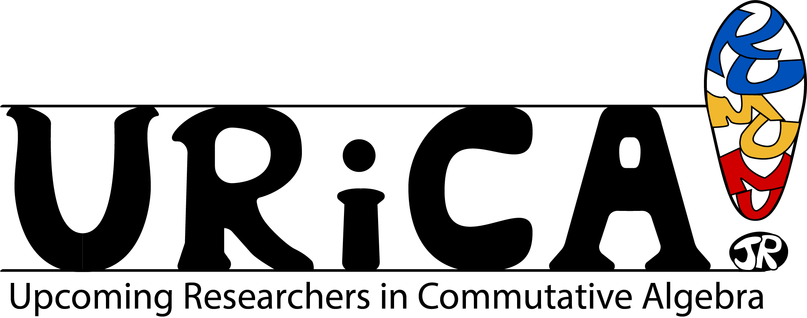

URiCA 2025 will be held May 3-4 in Avery Hall at the University of Nebraska, Lincoln.
The deadline to apply for funding is April 4th, 2025. Please register here if you would like to attend.
Inspired by the success of the KUMUNU commutative algebra conferences (KU, MU, NU), KUMUNUjr brought together graduate students and postdocs studying commutative algebra in the midwest to share their research and expertise while building lasting collaborations and friendships. Upcoming Researchers in Commutative Algebra, URiCA, is the next chapter for KUMUNUjr. We want to continue our mission to promote interaction among junior researchers, graduate students and postdocs, while branching outside our initial triad of universities.